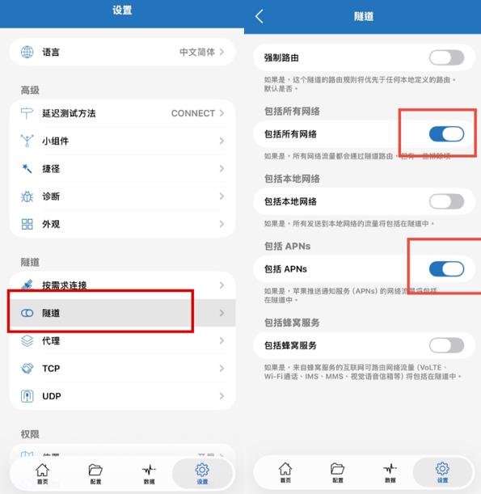

未开全局代理，海外 App 推送集体失效，部分 CallKit 来电也无法呼入。
大陆网络环境下，APNs 针对部分海外 App 的推送通道受到限制或屏蔽。
让 APNs 流量也走代理，并用 Fallback 策略守住失联底线。
近期，大量国内的 iPhone 用户发现了一个非常头疼的问题：在未开启全局代理的情况下，手机里的海外应用（如 Telegram、X/Twitter、Instagram、YouTube 等）突然变成了“哑巴”，彻底收不到任何消息推送了。有些用户甚至连 CallKit 语音通话也无法正常呼入。
经过社区各位技术大佬的排查，基本可以确认这是因为苹果的 APNs（Apple Push Notification service）推送服务器在大陆的网络环境下，针对部分海外 App 的推送通道进行了限制或屏蔽。
以前，即使你不开“梯子”，也能依靠苹果官方专属的直连 APNs 通道收到应用的通知，收到通知后再打开代理回复。但现在这条路被堵死了。不过别慌，本文将为你提供彻底的解决方案。
CORE IDEA
核心解决思路
既然直连的 APNs 走不通，解决的核心逻辑就是让苹果的 APNs 流量也通过代理工具（走节点）。
目前主流的 iOS 代理工具（如 Shadowrocket 小火箭、Loon 等）都支持接管系统 APNs 流量，但需要进行特定的规则配置。
致命缺陷预警
如果你让 APNs 走了代理，一旦你的节点宕机断联，你的手机将彻底“失联”——不仅海外 App，国内 App 的微信、QQ 推送也会收不到。
解决方案 强烈建议在策略组中为 APNs 配置 Fallback（回退 / 可用性测试）策略。即使海外节点挂了，也能保证国内常规推送不死。
METHOD 01 · SHADOWROCKET
方案一：Shadowrocket
（小火箭）配置教程
小火箭是目前用户基数最大的工具。根据 beibei030/ios-push-fix 的更新，目前更推荐用 APNs 修复模块接管推送；需要整套分流规则的话，也可以直接导入完整配置。
添加 APNs 修复模块（推荐）
模块只包含 APNs 相关规则，不会覆盖你现有的分流配置。可以直接复制下面的模块直链添加远程模块，也可以打开仓库下载 APNs_Push_Fix.sgmodule 后复制完整内容。
https://raw.githubusercontent.com/beibei030/ios-push-fix/main/APNs_Push_Fix.sgmodule- 在 Shadowrocket 中进入 [配置] → [模块]，点击 [新建模块]；如果客户端支持远程模块，直接填入上方直链。
- 也可以打开模块文件，复制完整内容后粘贴进去，填写名称并保存（例如
苹果APNs推送修复）。 - 进入 [设置] → [隧道]，打开 [APNs]；如果仍然不生效，再把 [包括所有网络] 一起打开。
- 关闭 VPN → 打开飞行模式等待 1 分钟 → 关闭飞行模式 → 重新打开 VPN。
模块会修复 push.apple.com、akadns.net、apple.com.edgekey.net 及一组 Apple 推送 IP 段；规则链接与更新请以 ios-push-fix 仓库为准。

使用完整配置（备选）
如果更希望一次性拿到完整分流规则，可以把下面的地址作为配置订阅添加到 Shadowrocket。该配置基于 Johnshall/Shadowrocket-ADBlock-Rules-Forever 的 cnip_ad 规则，并已加入 APNs 推送修复。
https://raw.githubusercontent.com/beibei030/ios-push-fix/main/sr_cnip_ad_pushfix.conf完整配置会带来一套新的分流规则，适合新装或愿意使用该规则集的用户。只想修 APNs 的话，优先用上面的模块，避免覆盖已有配置。
使用前须知
代理节点挂掉时，所有推送都会一起收不到（包括微信）。Web3 专用机无所谓，主力机慎用。
模块内的 IP 规则使用 no-resolve，用于防止 DNS 泄露。
METHOD 02 · LOON
方案二：Loon 配置教程
对于使用 Loon 的用户，可以通过添加策略和规则集来实现完美的分流。
创建专属策略组
- 打开 Loon，进入策略配置。
- 点击右上角添加策略组，按下表填写：
- 别名
- Apple Push
- 策略类型
fallback重要- 测试间隔
- 60 秒
- 最大超时
- 300 毫秒
记得把你的常用节点添加进去。
添加分流规则
- 进入 [配置] → [规则]，点击右上角加号 + 添加规则。
- 填入远程规则 URL：
https://raw.githubusercontent.com/QuixoticHeart/rule-set/refs/heads/ruleset/loon/apns.list策略组选择刚刚创建的 Apple Push。
接管系统路由
- 进入 [配置] → [高级配置] → [路由系统服务]。
- 打开 [包含所有网络] 以及 [包含 APNs]。
WHY IT MATTERS
这一步是为了确保在非 Wi-Fi 的 4G / 5G 移动数据网络下依然生效。
重启网络
同样，开启飞行模式 10 秒后再关闭，使配置生效。
METHOD 03 · MINIMAL
方案三：手动添加精简规则
如果你不想导入几千条的庞大规则集，或者担心耗费代理流量，可以手动将苹果最核心的推送域名或 IP 段加入直连配置文件并指向 Proxy：
DOMAIN-SUFFIX,push.apple.com,PROXY
DOMAIN-SUFFIX,akadns.net,PROXY
DOMAIN-KEYWORD,apple.com.edgekey.net,PROXY
IP-CIDR,17.0.0.0/8,PROXY,no-resolve注意：将 17.0.0.0/8 整个段代理可能会涵盖过多苹果服务，建议有条件还是使用上述方案的精细规则集。
FIELD NOTES
额外小贴士与替代方案
为什么 Wi-Fi 下正常，一出门用流量就收不到？
在移动数据（蜂窝网络）下，iOS 默认不让代理工具接管系统底层的 APNs。你必须在代理软件的高级 / 隧道设置中，手动开启“包括 APNs / Include APNs”选项。
Telegram 替代方案
对于 Telegram，如果在上述折腾后依然觉得麻烦，可以考虑使用第三方客户端，例如 Swiftgram 或 Nicegram。部分用户反馈第三方客户端自带了不同的推送保活机制。
彻底的一劳永逸？
如果主要通讯依赖海外 App，且有条件，部分网友实测使用非国行设备（如美版、港版）配合非国行 Apple ID，或者直接使用 eSIM 走漫游流量，可以从物理层面避开此类网络干扰。
不过也有港版用户反馈遇到了同样的问题——这与当前所连接的网络（中国大陆 IP）关联性更强。
CHEAT SHEET
一页速查
根据原文整理的排障索引，具体选项以各客户端当前版本为准。
| 场景 | 先检查 | 关键设置 |
|---|---|---|
| Wi-Fi 正常，蜂窝网络收不到 | 隧道 / 路由系统服务 | 打开「包括所有网络」和「包括 APNs」 |
| 节点故障后所有推送消失 | 策略组 | 使用 fallback / 可用性测试 |
| 想尽量少走代理流量 | 规则集 | 至少覆盖 push.apple.com 与 17.0.0.0/8 |
| 改完配置没反应 | 系统网络 | 飞行模式 10 秒–1 分钟后关闭 |